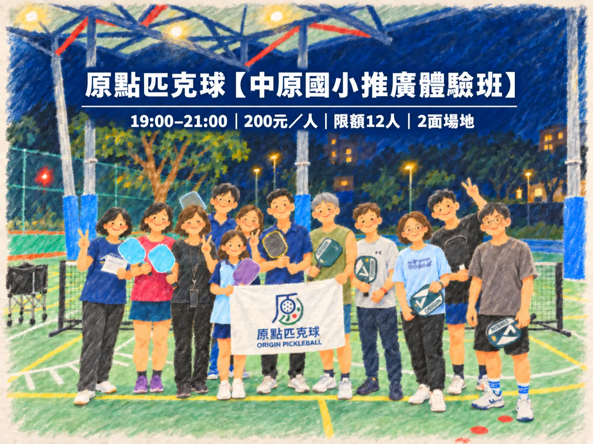
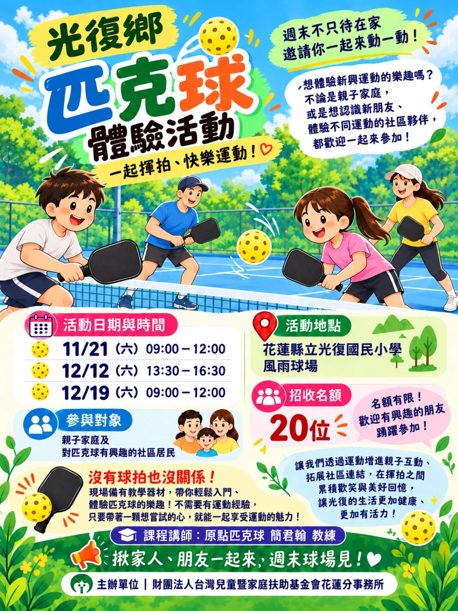
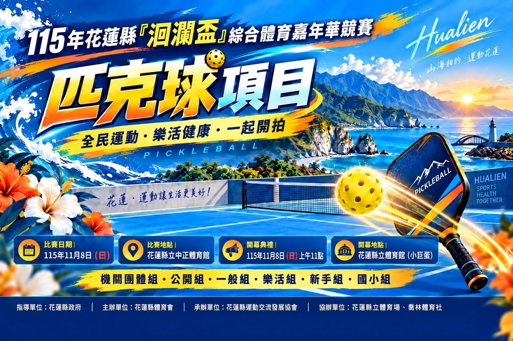
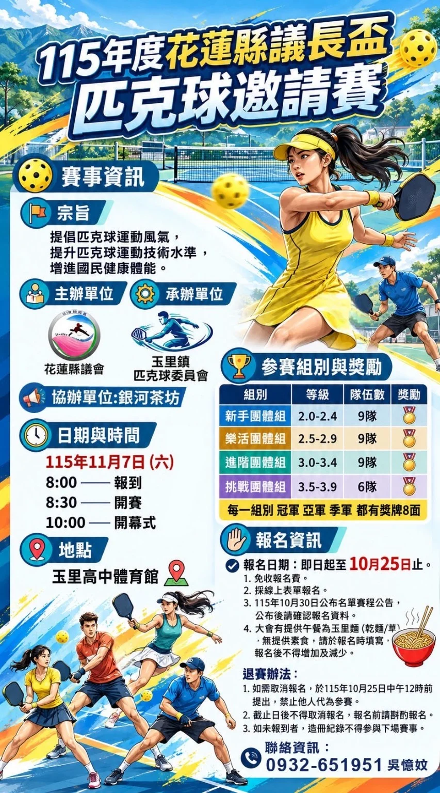
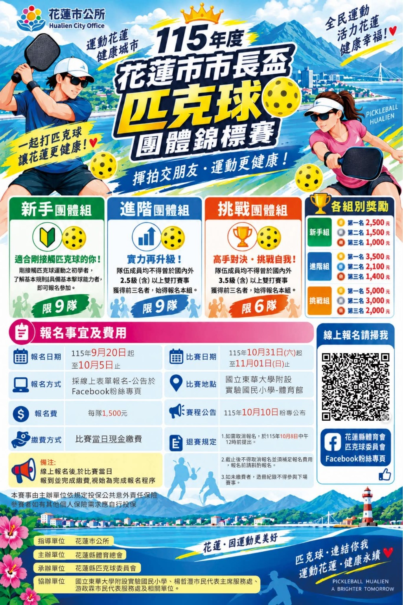

已額滿／報名截止中原國小匹克球推廣體驗班｜11/19 場次已額滿
19:00–21:00｜花蓮市中原國小風雨球場
原點匹克球於11/19（四）19:00～21:00在花蓮市中原國小風雨球場開課，限12人，每人200元，含場地與器材。報名頁已公告本場次額滿、報名截止。
查看完整資訊查看活動原頁（已截止） 
活動資訊光復鄉匹克球體驗活動
– 09:00–12:00｜花蓮縣立光復國民小學｜風雨球場
光復彩虹工作站邀請親子家庭及社區居民，一起認識匹克球。11/21、12/12、12/19 於光復國小風雨球場舉行，每場 20 位，現場備有教學器材。
查看完整資訊前往活動報名表 活動資訊光復鄉匹克球體驗活動
– 13:30–16:30｜花蓮縣立光復國民小學｜風雨球場
光復彩虹工作站邀請親子家庭及社區居民，一起認識匹克球。11/21、12/12、12/19 於光復國小風雨球場舉行，每場 20 位，現場備有教學器材。
查看完整資訊前往活動報名表 活動資訊光復鄉匹克球體驗活動（競賽互動）
– 09:00–12:00｜花蓮縣立光復國民小學｜風雨球場
當天會安排競賽互動。親子家庭及對匹克球有興趣的社區居民可報名，每場次 20 位，現場備有教學器材。
查看完整資訊前往活動報名表 查看已結束活動
賽事資訊115 年度吉安鄉鄉長盃匹克球錦標賽
08:00 報到；08:30–16:00 比賽｜吉安鄉太昌國小風雨籃球球場
11/15（日）於太昌國小舉行，親子組 16 組、社會組 2.0–2.9 級 48 組。每組 400 元，須先匯款再填表，11/6 17:00 截止，額滿提前截止。
查看完整資訊前往線上報名 
賽事資訊115 年花蓮縣「洄瀾盃」綜合體育嘉年華競賽－匹克球項目
（星期日）｜花蓮縣立中正體育館（依海報）
比賽日期為 115 年 11 月 8 日（星期日）；組別、賽程及其他細節請以賽事資訊查詢系統為準。
查看完整資訊查看賽事資訊查詢系統 
賽事資訊115 年度花蓮縣議長盃匹克球邀請賽
08:00 報到，08:30 開賽｜玉里高中體育館
11/7（六）於玉里高中體育館舉行，免費報名，10/25 截止。新手、樂活、進階與挑戰四個團體組，每隊登錄 6–8 人。
查看完整資訊前往線上報名 
賽事資訊115 年度花蓮市市長盃匹克球團體錦標賽
–｜國立東華大學附設實驗國民小學體育館
新手、進階、挑戰團體組。海報標示 9/20–10/5 線上報名、每隊 1,500 元；報名方式及最新安排請看花蓮縣體育會匹克球委員會公告。 海報報名期限為 10/5，期限已過；是否延長請以主辦單位最新公告為準。
查看完整資訊查看賽事公告 報名前先確認
請確認組別、資格、費用與報到時間；活動安排以主辦單位公告為準。